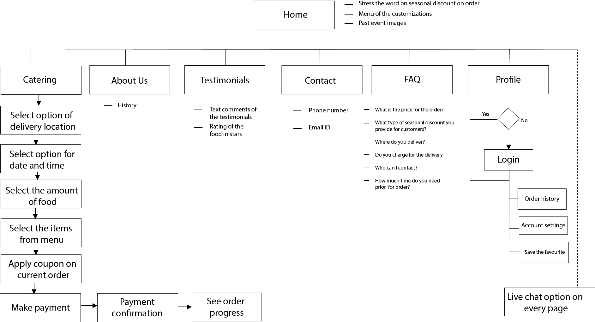

Overview
Every restaurant has a unique style and food products. In the digital world everyone would like to save their time and order choice of food. So, nowadays everyone would like to prefer to use an online food ordering system to save their time and get food.The food business is faster and gets more benefit for the owners through the online ordering process. The special burger website is designed for an entrepreneur, who wants to open a new, delivery-only establishment that delivers food (or drink) to customers living nearby. The centerpiece of the website will be an online food customization and ordering system. Since, I have decided to create the responsive website design for the restaurant. Special burger restaurant website is a responsive website design that customers can order using mobile as well as desktop. Special burger responsive website design is a capstone project of UI/UX design specialization through University of CalArts & Coursera.
Project Details:
Challenge: To create a responsive website design for the restaurant and design creative graphics for the website that interacts with the customers as well as to create easy navigation for the website that customers can order food online easily without getting any trouble.
Timeline: 8 Weeks
Role: As a designer, I have to research different restaurant styles and websites as well as customers' interest in food. To create a beautiful responsive website for the customers and business owners.
Methods: User research, User personas, sitemap, wireframing, Visual design & Clickable prototype.
Tools: Pen & paper, photoshop, Sketch app, Adobe XD, Illustrator, Balsamiq, marvel app.
PROCESS
User Research:
The process begins with coming up with the project ideas. In this process, I have research on different kinds of restaurants, unique styles, food customizations that interact with the customers about their restaurants. During the research process, I have noticed that so many restaurants provide food related to their location uniqueness of the people’s requirements. Also the catering of food is divided into different categories like business events, residential events, birthday parties, wedding events, etc. After researching the existing restaurant website, I have documented the restaurant's name, description of food customizations served by the restaurant, the main target audience, location of the restaurant and estimation of the cost of the food.

What I have found from user research
User Personas:
I have created the user personas based on the user requirements.I have noted down the number of requirements of the client as well as the customer. In this process, I have created the user personas about the three different category people like event organizer, resident head, resident owner. From the user personas, I have noted down the user [client,customer] needs and goals.


From the personas, I have write down client needs and User needs. The website needs to enable the user and client to:
User needs
Client needs
Sitemap :
To create the sitemap, first I have to separate the list of the content requirements and functional requirements. Content requirement helps me to know what content should be included in the website, organize the content in the website, to create the different graphics styles for the website that make the website beautiful and creative. Second, I have listed out the functional requirement for the website. Functional requirement of the website helps to create an easy navigation for the website. Finally I have created the sitemap for the restaurant website which clearly demonstrates the website navigation and content of the home page, about page, contact page, FAQ page, food order process screens, profile page etc.
Wireframing:
Home screen, online food order screen, about, FAQ ..screens, I have created the wireframing. The wireframe of the website helps me to create the organized content and navigation of the website for the desktop as well as mobile device.


Visual Design:
For the visual design of the website, I have created the Moodboard of the website which includes typography, color selection, image making for the website which helps me the look and feel of the restaurant website. After that I have created the first visual design of the website for two digital devices through the photoshop, sketch app. The visual design of the website evaluates with real world users through the communication channel. After the evaluation process, I have updated the website.Final step of the process is to create a clickable prototype using the marvel App.


Learnings